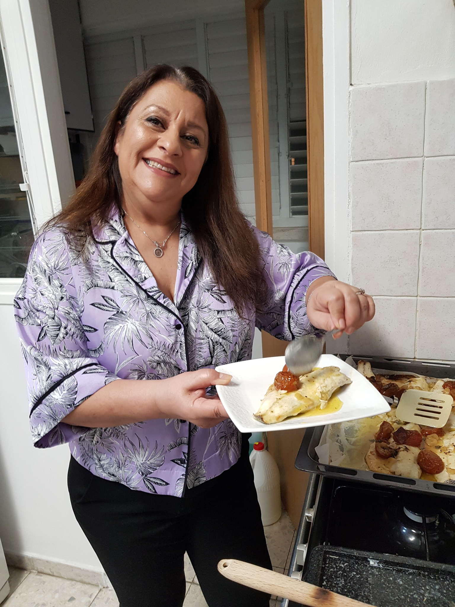

דילוג לתוכן
המטבח של דינה
מתכונים
רגעים עם אמא
המילים של דינה
הספר ↓
טיוטה לבדיקה
לכל הפרקים
04
דגים

דגים
דג מרוקאי של שבת
כמות מנות: 7
דגים
סלמון בתנור - בסגנון צרפתי
כמות מנות: 6
דגים
סלמון בתנור - בסגנון אסייתי
כמות מנות: 6
דגים
דניס בתנור
כמות מנות: 2
דגים
גפילטע פיש
כמות קציצות: 25 קציצות
דגים
סלונה
מנות: 6-8
דגים
קציצות דגים
קובות
ביצים ולביבות
מאפים
דגים
מנות פתיחה
ממולאים
בשר
עוף
תוספות
מרקים
סגירה ×